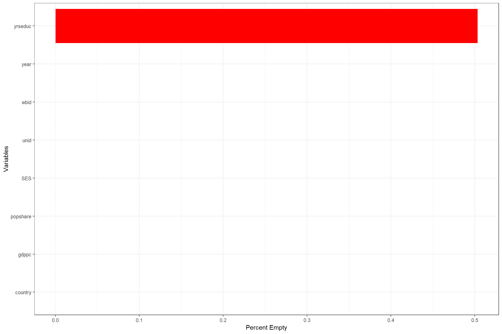
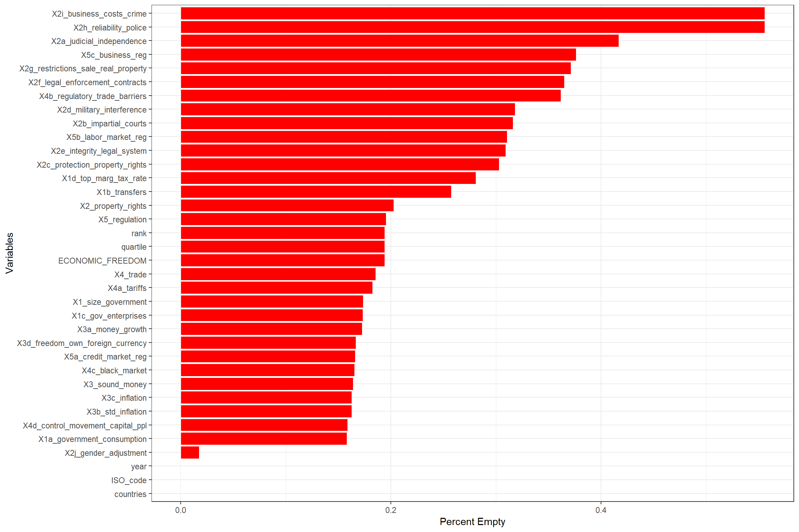
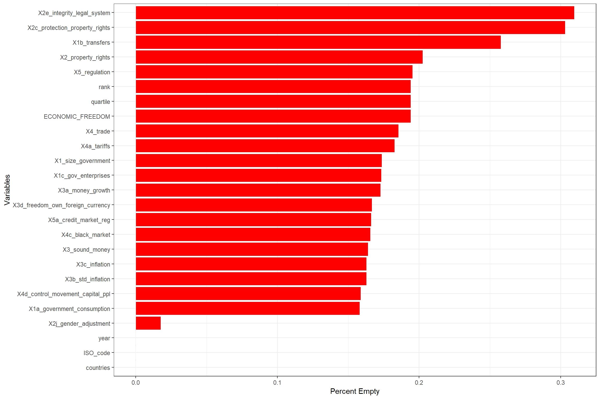

We load the raw dataset into the ses and efw dataframes:
# Country Socioeconomic Status Scores (SES)
ses <- read.csv("data/ses.csv")
# Economic Freedom of the World (EFW)
efw <- read.csv("data/efw.csv")Before we begin with the data cleanup for the EFW dataset, we need to identify the variables that contain a large amount of missing data (missing/empty values). We start by scoring the variables based on the percentage of empty data.
missing_ses <- ses %>% summarise_all(funs(sum(is.na(.))/n()))
missing_ses <- gather(missing_ses, key = "variables", value = "percent_empty")
ggplot(missing_ses, aes(x = reorder(variables, percent_empty), y = percent_empty))+
xlab("Variables")+ylab("Percent Empty")+
geom_bar(stat = "identity", fill = "red", aes(color = I("white")), size = 0.3)+
coord_flip()+
theme_bw() Since only one variable contains null data, we only drop that variable. We filter data that is not within the 1970-2010 range. This cleaned SES dataset will be joined with the cleaned EFW dataset later.
ses_toclean <- ses %>% select(-c(yrseduc))
ses_imp <- ses_toclean %>% filter(year %in% c(1970,1980,1990,2000,2010))
write_csv(ses_imp, path = "data/imp_ses.csv")Similarly, before we begin with the data cleanup for the EFW dataset, we need to identify the variables that contain a large amount of missing data (missing/empty values). We start by scoring the variables based on the percentage of empty data.
missing_efw <- efw %>% summarise_all(funs(sum(is.na(.))/n()))
missing_efw <- gather(missing_efw, key = "variables", value = "percent_empty")
ggplot(missing_efw, aes(x = reorder(variables, percent_empty), y = percent_empty))+
xlab("Variables")+ylab("Percent Empty")+
geom_bar(stat = "identity", fill = "red", aes(color = I("white")), size = 0.3)+
coord_flip()+
theme_bw() We further want to reduce the variables down to a target of 25 variables. Variables with null data of 35% (0.35) and above will be dropped. Variables that are also of no interest for our analysis are dropped:
efw_filtered <- efw[lapply(efw, function(x) sum(is.na(x)) / length(x)) < 0.35]
efw_toclean <- select(efw_filtered, -c(X1d_top_marg_tax_rate, X2b_impartial_courts, X2d_military_interference, X5b_labor_market_reg))We plot the missing dataset chart again to visualize the final dataset that would need to be imputed
missing_efw <- efw_toclean %>% summarise_all(funs(sum(is.na(.))/n()))
missing_efw <- gather(missing_efw, key = "variables", value = "percent_empty")
ggplot(missing_efw, aes(x = reorder(variables, percent_empty), y = percent_empty))+
xlab("Variables")+ylab("Percent Empty")+
geom_bar(stat = "identity", fill = "red", aes(color = I("white")), size = 0.3)+coord_flip()+
theme_bw()
The EFW dataset is stored into a temp_efw.csv for manual processing:
write_csv(efw_toclean, path = "data/temp_efw.csv")The dataset is then cleaned by hand using MS Excel due to random high number of null values:
Load the imputed dataset imp_ses.csv and imp_efw.csv for joining:
# Country Socioeconomic Status Scores (SES)
imp_ses <- read.csv("data/imp_ses.csv")
# Economic Freedom of the World (EFW)
imp_efw <- read.csv("data/imp_efw.csv")Join the dataset and save it as imp_ses_efw.csv for processing by the other pages:
imp_ses_efw <- merge(imp_ses, imp_efw, by.x=c("year", "wbid"), by.y=c("year", "ISO_code"))
write_csv(imp_ses_efw, path = "data/imp_ses_efw.csv")